BONJOUR
SALUTATIONS, HELLO, SALAMA, HALLO, HOLA, CIAO, NAMASTE, KONNICHIWA, MERHABA, SALAM, ZDRAVSTVUYTE, SHALOM, SAWUBONA, ANYONGHASEYO, JUMBO, HALLO, HEJ, AHOJ, SVEIKI.
JE SUIS
Félicien ANJARASOA, actuellement étudiant en troisième année en Informatique. Autodidacte en Graphic Design et Multimédia, je suis passionné par la photographie et l'art en général.
CECI
est mon portfolio en art de la photographie. Vous y trouverez une sélection de mes travaux, des explications et mes inspirations ainsi que les mis à jour le plut récents possibles.
MON OBJECTIF
c'est de montrer mon sens artistique et ma créativité pour devenir un jour un Directeur Artistique pour des projets digitaux aux objectifs artistiques et innovants.
Ma première collection photographique, née durant l’hiver 2025–2026. Une immersion dans les Hautes Terres, entre froid, argile, rencontres et découverte d’un nouvel environnement.
À travers des fragments de jeux, de liberté et de moments partagés, l’enfance, de l’insouciance et des souvenirs que l’on ne mesure parfois qu’après les avoir perdus.
Parce qu’une même réalité peut être perçue de mille façons, cette collection explore la frontière entre ce que l’on voit et ce que l’on choisit de regarder.
Ne pas seulement voir la pauvreté, mais les personnes derrière elle : des gens qui aiment, rient, jouent et construisent leur quotidien comme nous tous.

ORANGE SNOW

COMING OF AGE

ANOTHER POINT OF VIEW

AMONG US
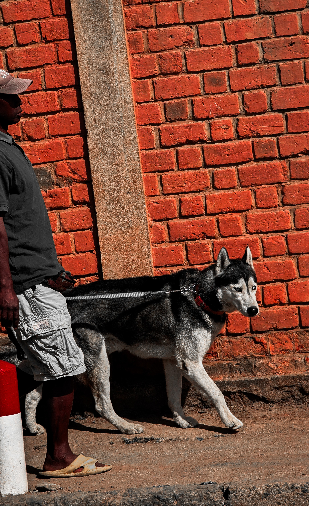
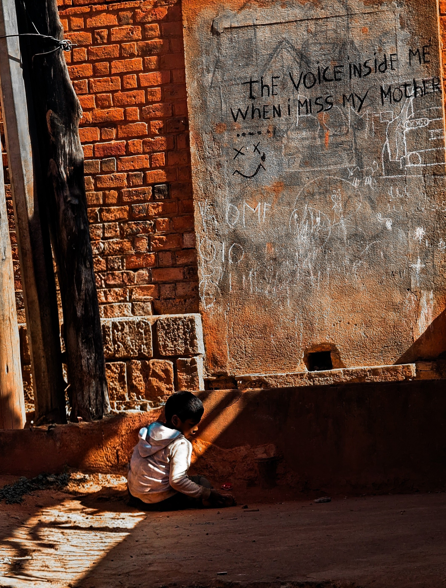
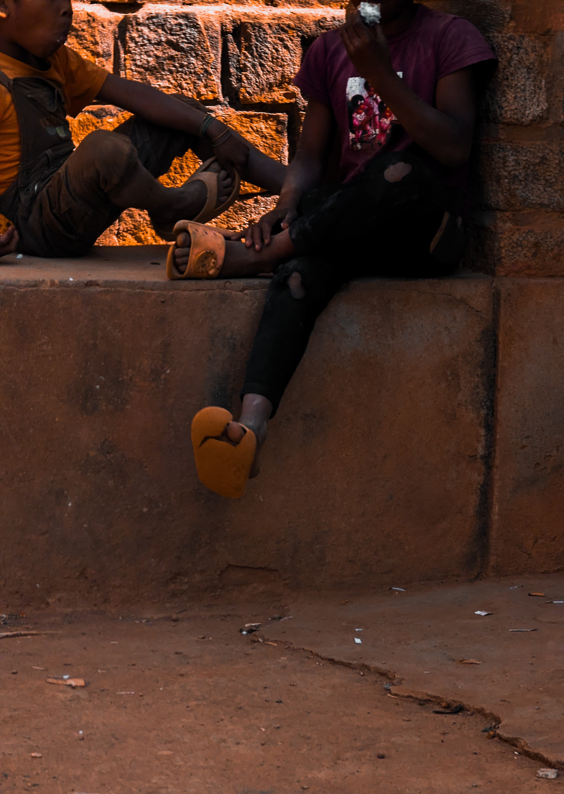
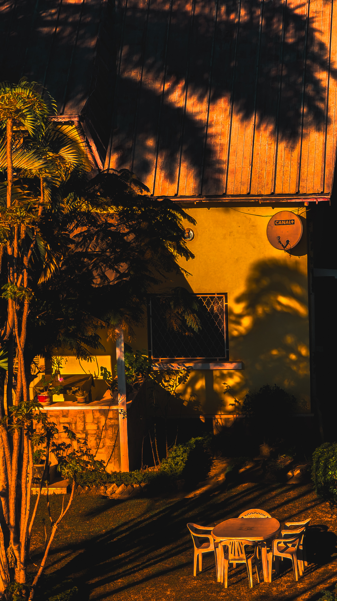
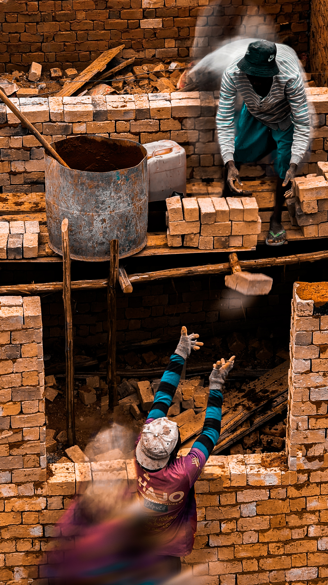
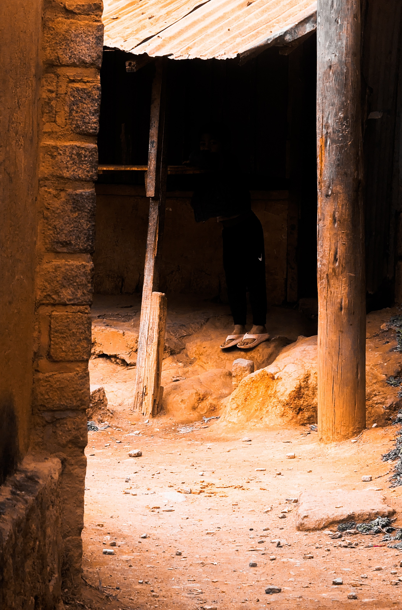
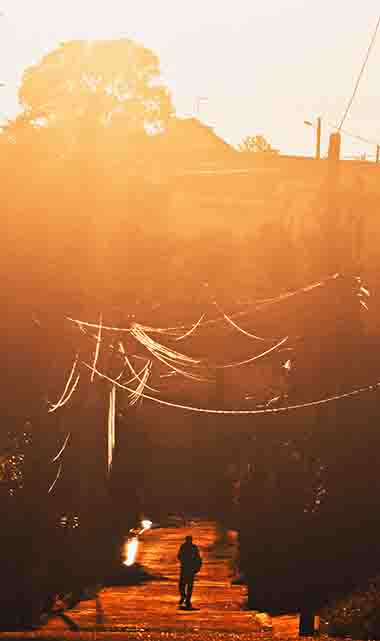
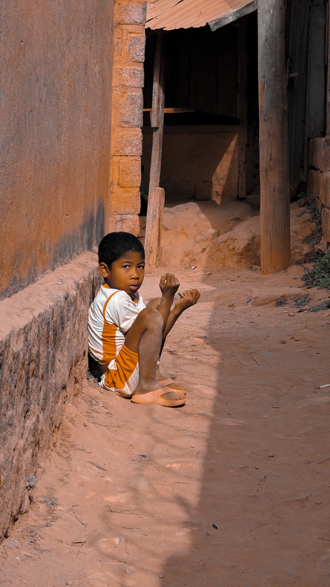
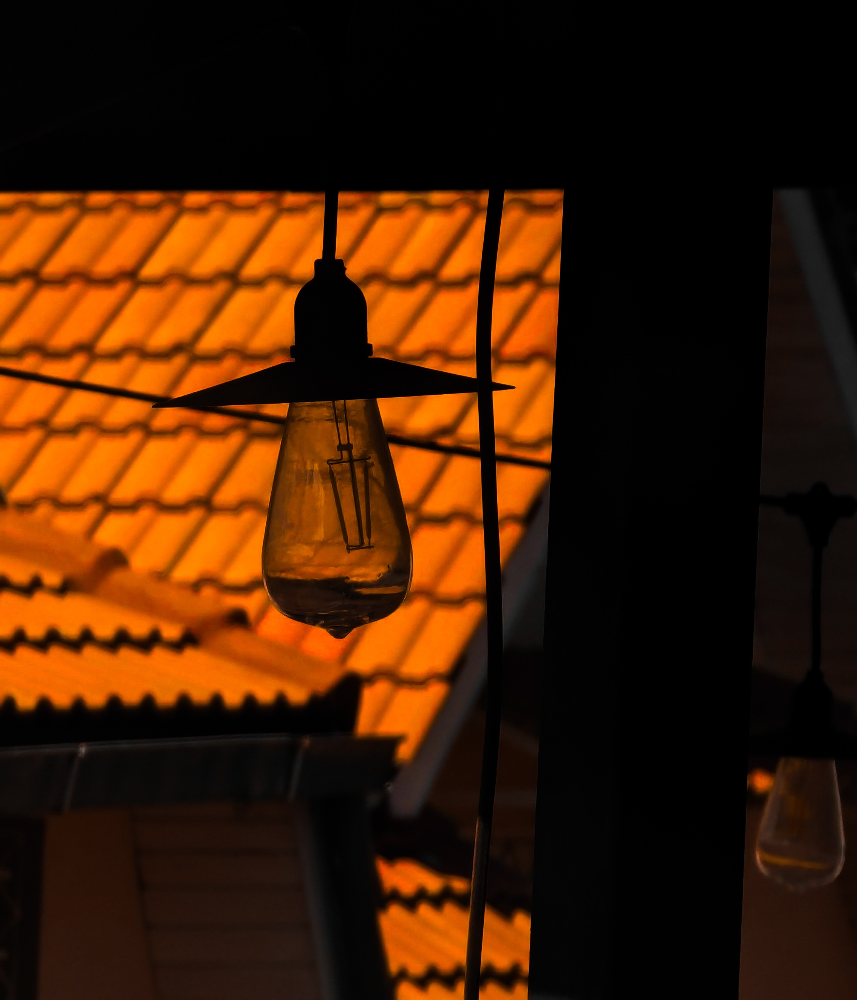
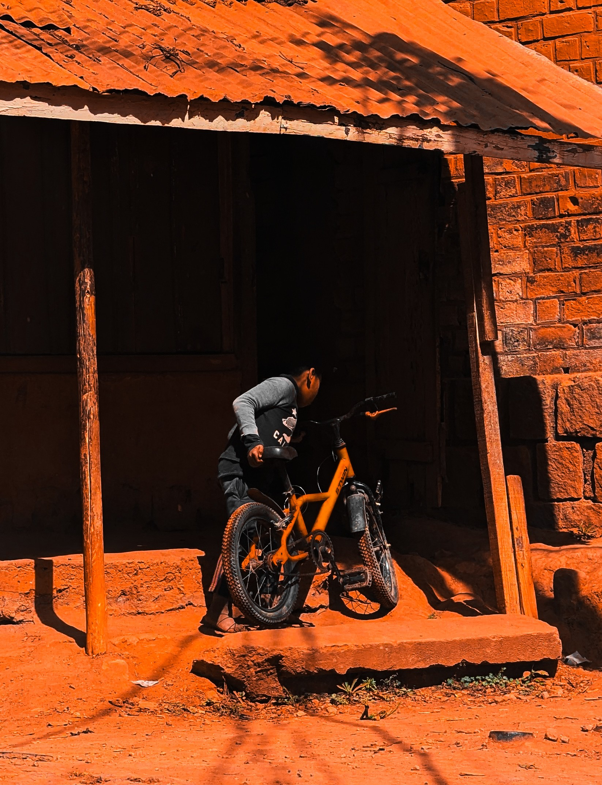
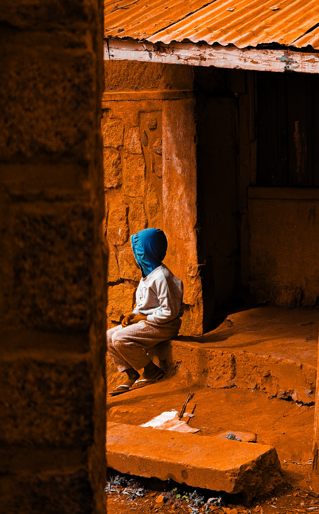
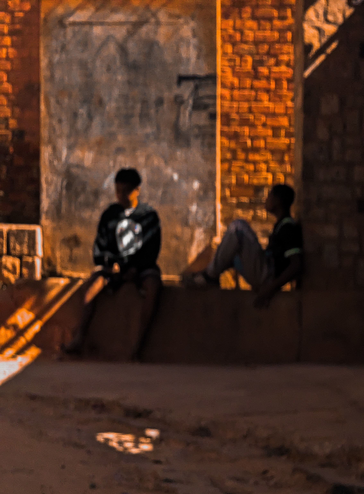